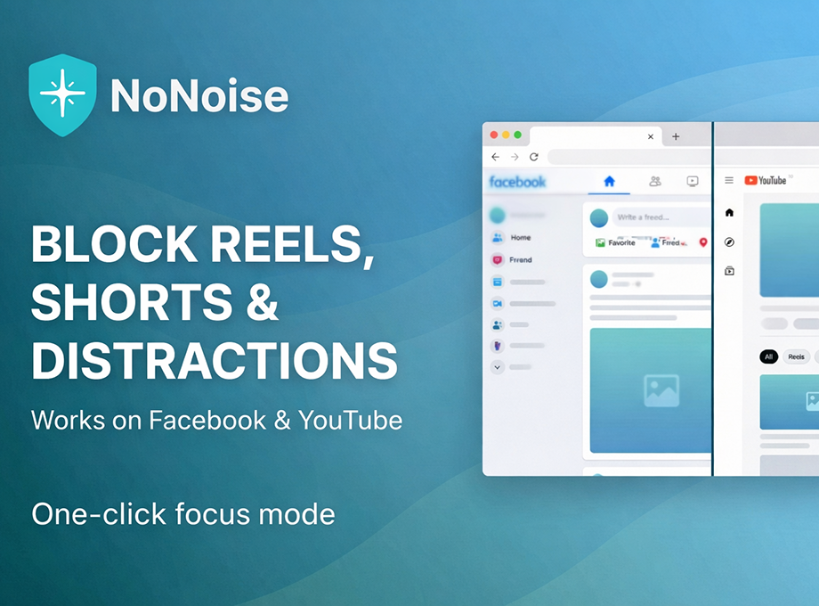
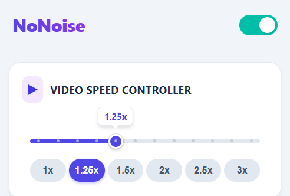
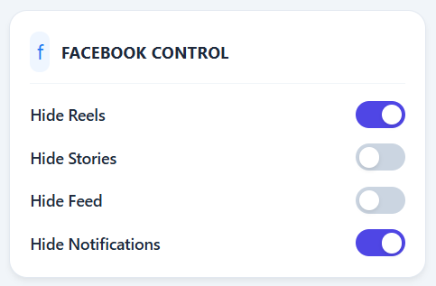
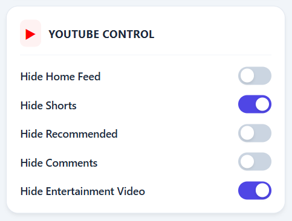
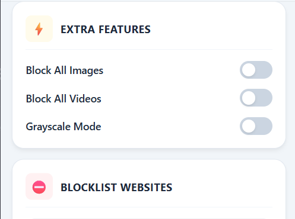

Master Your Focus on
Facebook & YouTube.
Remove distractions like Reels, Shorts, and Notifications. Control Video Speed globally. Reclaim your time and boost productivity.

images/hero-screenshot.png
Add your image inside the images folder!
Features Designed for Deep Work
Stop fighting your own willpower. Let NoNoise automatically curate your digital environment so you can focus on what matters.
Global Video Speed Controller
Take control of your media consumption. Speed up or slow down videos (0.25x - 3.0x) on ANY website with a seamless overlay.

images/feature-speed.png
Facebook Focus Control
Take charge of your Facebook experience by automatically hiding Reels, Stories, News Feed, and Notifications to eliminate doom-scrolling before it starts.

images/feature-facebook.png
YouTube Focus Control
Watch with intent. Hide the Home Feed, Shorts, Recommended videos, and Comments to maintain your focus on educational content.

images/feature-youtube.png
Extra Features
Enhance your browsing serenity. Block all distracting images and videos, or enable Grayscale Mode to limit visual dopamine.

images/feature-extra.png
Focus in 3 Simple Steps
Install Extension
Add NoNoise to Chrome or Firefox for free from their official stores in seconds.
Pin to Toolbar
Pin the extension for quick access to the master switch and settings.
Toggle & Focus
Configure your preferences once and enjoy a distraction-free web.